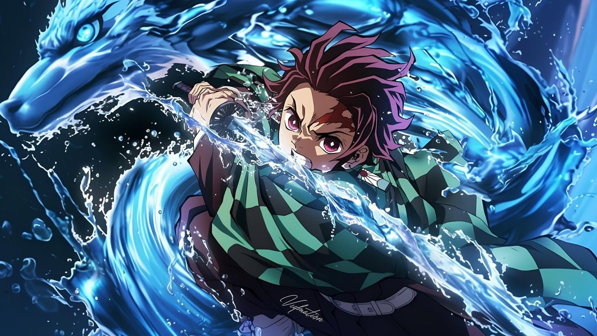
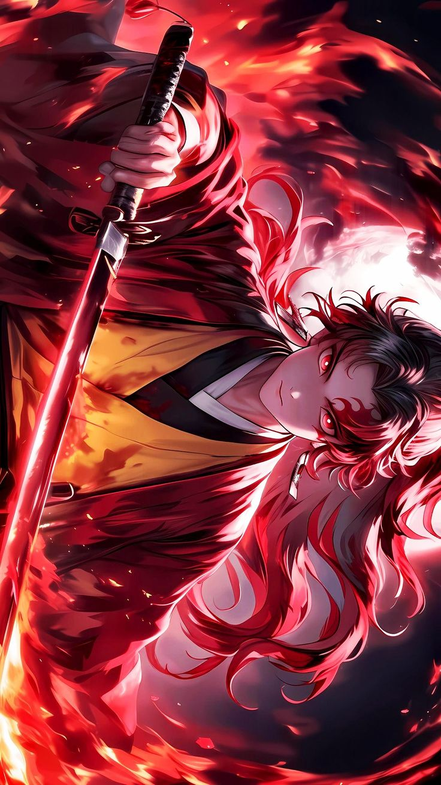
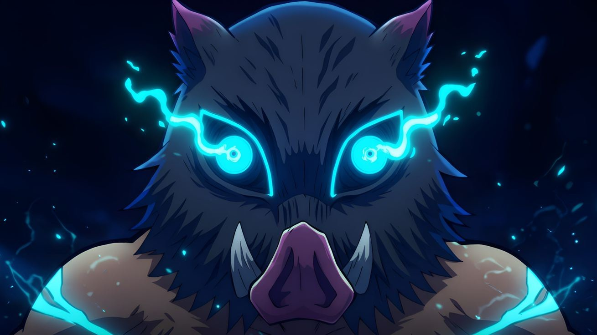

Tanjiro
Ele é retratado como um jovem de coração nobre, movido por uma determinação que raramente se vê. Mesmo diante das maiores perdas, ele mantém a gentileza como guia, acreditando que todos merecem compaixão — até mesmo inimigos que cruzam seu caminho. Sua força nasce da empatia, e seu foco inabalável o transforma em alguém capaz de enfrentar qualquer desafio. Ele segue adiante não por desejo de glória, mas pela promessa silenciosa de proteger aqueles que ama, carregando a esperança como sua maior arma.

Nezuko
Ela é mostrada como uma figura delicada à primeira vista, mas que revela uma força profunda por trás de seu silêncio. Mesmo após sua transformação, conserva uma pureza que desafia a escuridão que tenta consumi-la. A dualidade entre doçura e ferocidade faz dela alguém único, capaz de ser gentil e devastadora ao mesmo tempo. Ela luta não com palavras, mas com ações, provando que sua humanidade permanece viva, brilhando intensamente mesmo nos momentos mais sombrios.

Yoriichi
Ele é retratado como uma figura silenciosa e quase mítica, alguém cuja presença inspira respeito antes mesmo de qualquer palavra ser dita. Sua habilidade natural o coloca acima de todos, mas o que realmente o define é a serenidade com que carrega um destino pesado demais para qualquer mortal. Mesmo carregando uma dor profunda, ele age com gentileza e convicção, lutando não por glória, mas para impedir que o mal avance sobre o mundo. Aos olhos dos outros, ele parece inalcançável — um guerreiro cuja força toca o divino.

Inosoke
Ele é apresentado como selvagem, impulsivo e movido por instintos quase animais. Cresceu longe de convívio humano e isso moldou sua personalidade direta, agressiva e energética. Ainda assim, sob a máscara feroz existe um coração surpreendentemente leal, que aprende aos poucos o significado de companheirismo. Ele luta com intensidade bruta, mas também com sinceridade, mostrando que sua força vem tanto da coragem quanto do desejo de provar seu próprio valor.

Zenitsu
Ele aparece como alguém dominado pelo medo, acostumado a duvidar de si mesmo em cada passo. Porém, dentro dessa insegurança habita uma força extraordinária, que desperta apenas quando ele acredita que não há mais saída. Sua coragem não é constante, mas verdadeira — surge nos instantes críticos, como um relâmpago inesperado que corta a escuridão. Ele mostra que até os mais inseguros carregam um potencial enorme, e que grandes feitos podem vir de quem menos acredita em si.

Muzan
Ele é mostrado como a personificação do medo, alguém que domina pela frieza e pela ausência de remorso. Sua presença é calculada, elegante e ao mesmo tempo mortal, como uma sombra que nunca pode ser realmente contida. Ele manipula, engana e destrói sem hesitação, sempre buscando uma perfeição impossível de alcançar. Aos que o observam, ele parece invencível — um ser que governa as trevas com inteligência e crueldade, movido apenas pelo desejo de permanecer eterno.